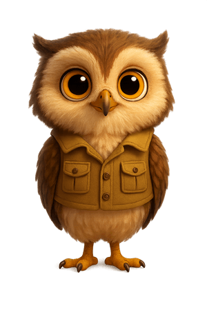

Escolhe o teu desafio:
Descobre como cuidar do teu corpo e da tua alimentação!

Nível Completo!
Estás a ir muito bem!
Missão Cumprida!
Completaste os desafios sobre os Hábitos Saudáveis!
Tiveste 0 erros.
Tiveste 0 erros.